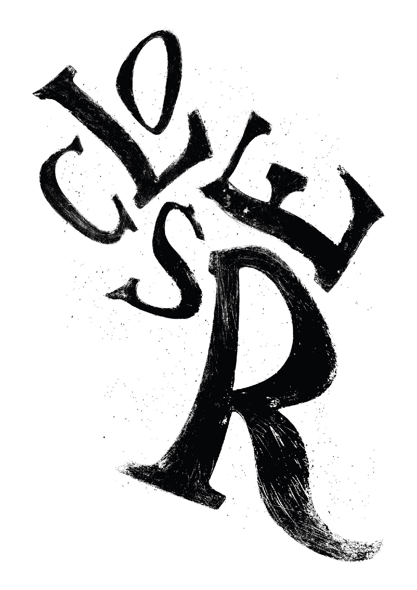
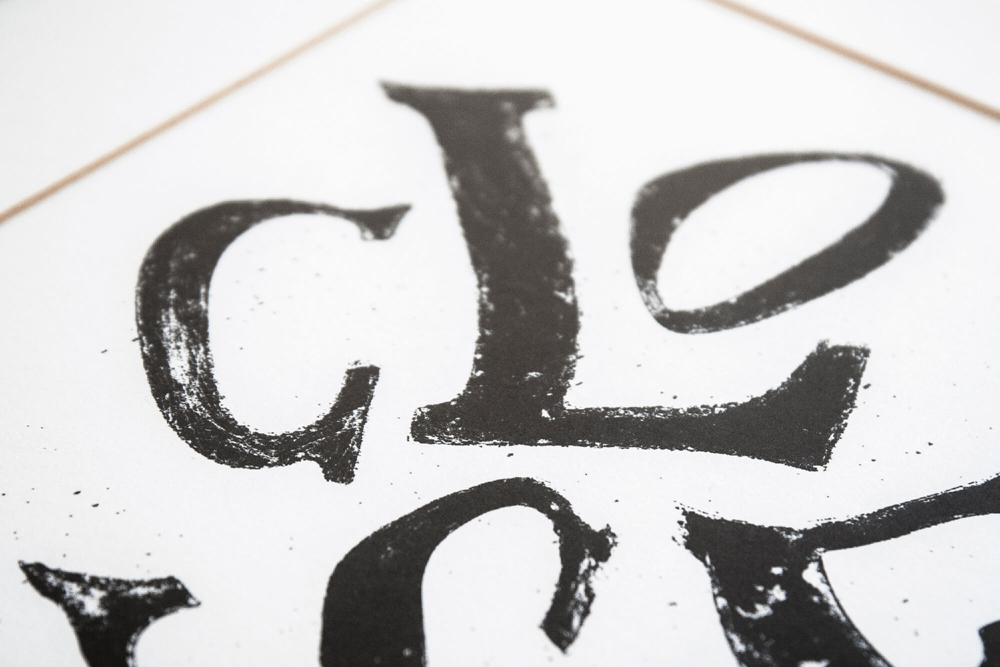
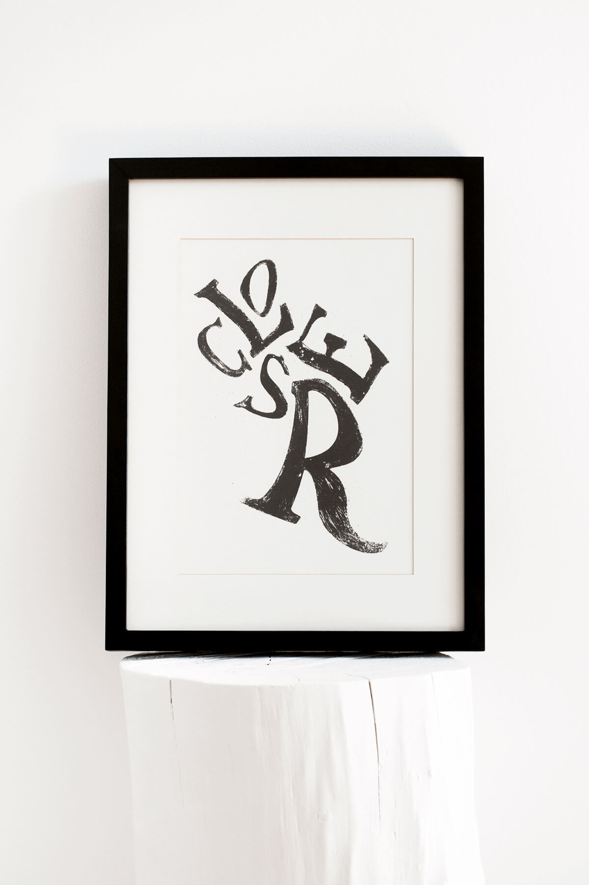
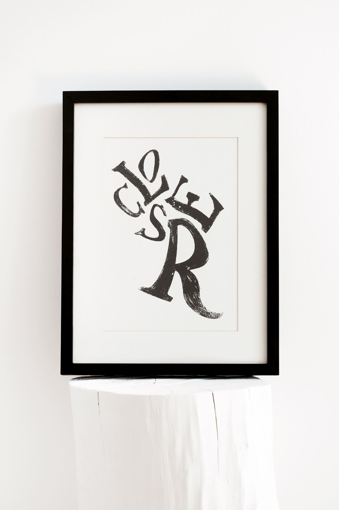
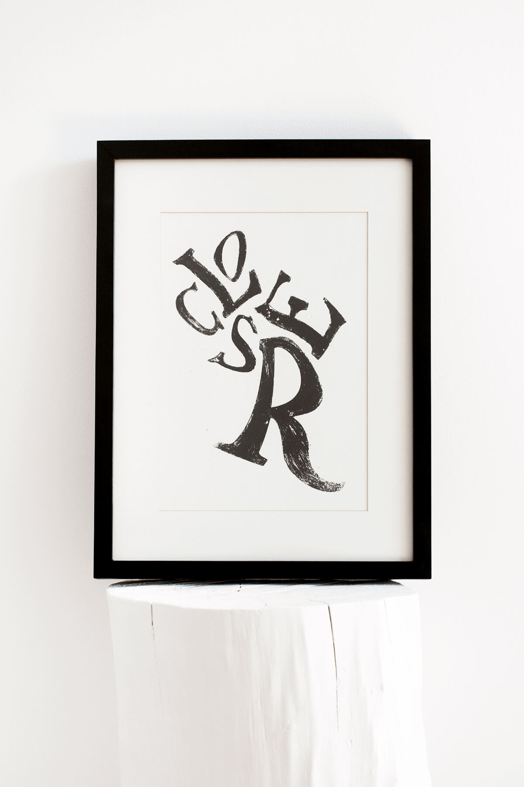

Closer
2017 /Type Poster /Personal Project
Collected letters from an abandoned factory in Barcelos, Portugal. The letters were scanned and then edited on Photoshop. The movement of the flying characters that form the word “Closer”, was created to give the observer a kind of dimension between each letter, meeting the concept given by the word.



 


go back
back to top